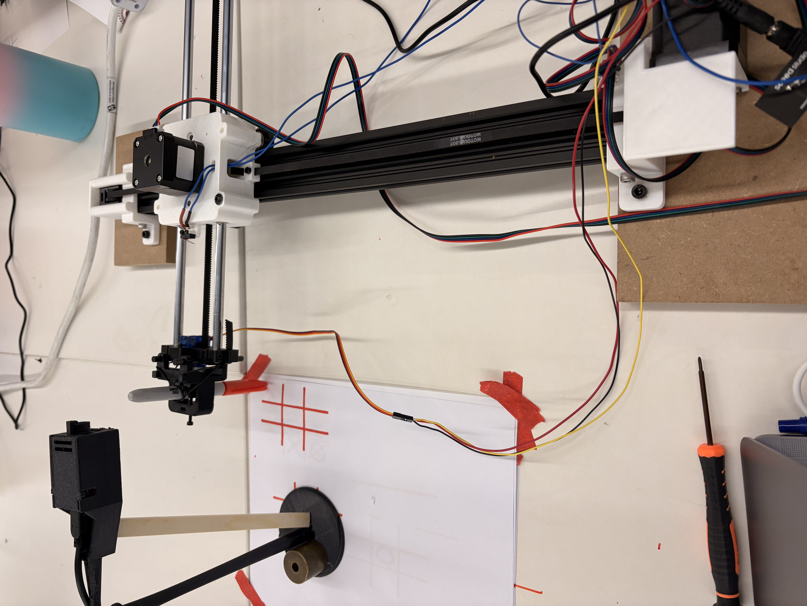

Overview
Our goal for this project was to make a Tic-Tac-Toe Drawing machine that is able to play with you and take turn putting X's and O's on the sheet. The goal was for the machine to use computer vision and analyze snapshots ofthe board to determine where the other player placed their O and where it should place its next move.


Construction
To construct our drawing machine we followed the build kit directions exactly, and our end effector was simply a marker. Where our product required additional design, was modifying an ESP32 CAM holder to position the camera directly above the piece of paper to fully capture the image. Which can also be seen in the image above.
A big issue that we ran into was with the computer vision and getting the python code to actually detect the changes on the board. It was okay at detecting X's and not good at detecting O's at all. Another more minor issue was that orignally our camera talked to python code over a server, and the python communicated with the ESP32 (which controlled the motors) over serial. This caused issues with serial monitor overloads and brownouts. We then switched to have python communicated with ESP32 over server as well, and connected the ESP32 to external power source (instead of laptop).
Code
Here is a portion of our python that processes the images from the camera. We have also included a debugging grid example.

Python
def _classify_cell(cell_bgr, gray_path=None):
import cv2
import numpy as np
# -------------------- preprocess --------------------
gray = cv2.cvtColor(cell_bgr, cv2.COLOR_BGR2GRAY)
blur = gray.copy()
if gray_path:
cv2.imwrite(gray_path, blur)
print(blur.min())
print(blur.max())
# -------------------- blank detection --------------------
background = np.percentile(blur, 40)
dark_ratio = np.sum(blur < background - 18) / blur.size
print(background)
print(f" std={blur.std():.1f} dark_ratio={dark_ratio:.3f}")
if dark_ratio < 0.02:
return "."
# -------------------- binarization --------------------
_, th = cv2.threshold(
blur, 0, 255,
cv2.THRESH_BINARY_INV + cv2.THRESH_OTSU
)
h, w = th.shape
mx = max(2, w // 8)
my = max(2, h // 8)
roi = th[my:h - my, mx:w - mx]
if roi.size == 0:
return "."
ink_ratio = np.count_nonzero(roi) / roi.size
if ink_ratio < 0.10:
return "."
# =========================================================
# FIND CONTOURS
# =========================================================
contours, hierarchy = cv2.findContours(
roi,
cv2.RETR_EXTERNAL,
cv2.CHAIN_APPROX_SIMPLE
)
if not contours:
return "."
roi_h, roi_w = roi.shape
roi_area = roi_h * roi_w
good_contours = [
cnt for cnt in contours
if cv2.contourArea(cnt) >= 0.08 * roi_area
]
if not good_contours:
return "."
Here is a portion of our arduino ESP32 CAM code that controls the game flow. Full code files in ZIP above.
CSS
// -------------------- Setup --------------------
void setup() {
Serial.begin(115200);
Serial.setDebugOutput(true);
Serial.println();
camera_config_t config;
config.ledc_channel = LEDC_CHANNEL_0;
config.ledc_timer = LEDC_TIMER_0;
config.pin_d0 = Y2_GPIO_NUM;
config.pin_d1 = Y3_GPIO_NUM;
config.pin_d2 = Y4_GPIO_NUM;
config.pin_d3 = Y5_GPIO_NUM;
config.pin_d4 = Y6_GPIO_NUM;
config.pin_d5 = Y7_GPIO_NUM;
config.pin_d6 = Y8_GPIO_NUM;
config.pin_d7 = Y9_GPIO_NUM;
config.pin_xclk = XCLK_GPIO_NUM;
config.pin_pclk = PCLK_GPIO_NUM;
config.pin_vsync = VSYNC_GPIO_NUM;
config.pin_href = HREF_GPIO_NUM;
config.pin_sccb_sda = SIOD_GPIO_NUM;
config.pin_sccb_scl = SIOC_GPIO_NUM;
config.pin_pwdn = PWDN_GPIO_NUM;
config.pin_reset = RESET_GPIO_NUM;
config.xclk_freq_hz = 20000000;
config.pixel_format = PIXFORMAT_JPEG;
config.frame_size = FRAMESIZE_QVGA;
config.grab_mode = CAMERA_GRAB_WHEN_EMPTY;
config.fb_location = CAMERA_FB_IN_PSRAM;
config.jpeg_quality = 12;
config.fb_count = 1;
if (psramFound()) {
config.fb_count = 2;
config.grab_mode = CAMERA_GRAB_LATEST;
config.fb_location = CAMERA_FB_IN_PSRAM;
} else {
config.fb_location = CAMERA_FB_IN_DRAM;
config.frame_size = FRAMESIZE_QVGA;
}
esp_err_t err = esp_camera_init(&config);
if (err != ESP_OK) {
Serial.printf("Camera init failed: 0x%x\n", err);
while (true) delay(1000);
}
sensor_t *s = esp_camera_sensor_get();
if (s) {
s->set_brightness(s, 0);
s->set_contrast(s, 1);
s->set_saturation(s, -1);
s->set_framesize(s, FRAMESIZE_QVGA);
}
#if defined(LED_GPIO_NUM)
setupLedFlash();
#endif
WiFi.begin(ssid, password);
WiFi.setSleep(false);
Serial.print("WiFi connecting");
while (WiFi.status() != WL_CONNECTED) { delay(500); Serial.print("."); }
Serial.printf("\nConnected — IP: %s\n", WiFi.localIP().toString().c_str());
startCameraServer();
Serial.println("Ready. Type 'start' to begin a new game.");
}
// -------------------- Loop --------------------
void loop() {
// Read serial commands
static String serialBuf = "";
while (Serial.available()) {
char c = Serial.read();
if (c == '\n' || c == '\r') {
serialBuf.trim();
serialBuf.toLowerCase();
if (serialBuf == "start") {
gameRunning = false;
Serial.println("Resetting game state...");
if (postReset()) {
Serial.println("Waiting for motor to redraw the grid (replace paper now)...");
if (waitForMotorReady()) {
gameRunning = true;
Serial.println("Grid drawn. Game started — draw an O to take your turn.");
}
} else {
Serial.println("Could not reach Python server — is detect.py running?");
}
}
serialBuf = "";
} else {
serialBuf += c;
}
}
// Scan on interval only while a game is active
if (gameRunning) {
static unsigned long lastScan = 0;
unsigned long now = millis();
if (now - lastScan >= SCAN_INTERVAL_MS) {
lastScan = now;
Serial.println("Scanning...");
captureAndSend();
}
}
delay(20);
}
Notes
Challenges; Next Steps
A big issue that we ran into was getting the python code to actually detect the changes on the board. It was okay at detecting X's and not good at detecting O's at all. Moving forward we may try to have the camera images uploaded directly to an AI image processing software to have it decide the state of the board.